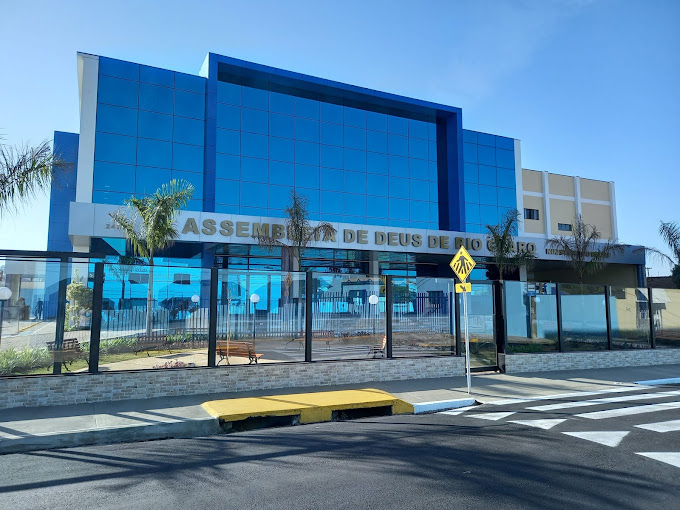

senac Rio Claro " A Assembleia de Deus de Rio Claro – Ministério do Belém é uma igreja filiada a CONFRADESP Convenção Fraternal das Assembleias de Deus do Estado de São Paulo, e a CGADB Convenção Geral das Assembleias de Deus do Brasil. Uma igreja que preza pela Palavra de Deus, a Bíblia Sagrada, e que tem seu foco na evangelização e obras missionárias, apresentando o único e verdadeiro caminho: Jesus Cristo o nosso Senhor e Salvador, o Senhor da igreja, em quem nos firmamos fortemente. Com um campo de trabalho pujante, com sede na cidade de Rio Claro, se estende para os municípios de Charqueada, Corumbataí, Ipeúna, e os distritos de Ajapi e Assistência, centenas de obreiros unidos a mesma visão e propósito, tem trabalhado para resgatar vidas, apresentando-lhes o Puro Evangelho de Jesus, e preparando crentes para o arrebatamento. Sabendo da necessidade de assistir a família, da qual é formada a igreja, a Assembleia de Deus de Rio Claro – Ministério do Belém, através da visão extraordinária de Reino do seu presidente, Pr. Sisaque Valadares, e visando um crescimento em todas as áreas, possui em toda a sua estrutura de aprendizado e ministrações, departamentos que visam o suporte a todas as áreas e faixas etárias, como CRIANÇAS, ADOLESCENTES, JOVENS, ADULTOS, CURSO PARA CASAIS, ESCOLA BÍBLICA DOMINICAL, além das reuniões semanais pautadas na edificação do corpo de Cristo. São 40 cultos simultâneos aos domingos, e que também se estendem por uma programação semanal dividida entre a sede e suas congregações. Prosseguimos avançando, e crendo que estamos no prólogo de grandes bênçãos do nosso Senhor sobre a igreja. Nosso convite à você: VEM PRA CASA DO PÃO!
